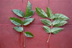

Common name in Tamil : Vilpadri, mankulanchi, pannir
Common name in Singhalese : Diya danga

Diagnostic characters
Botany & morphology
Regeneration
Reproductive biology
Ecology
Distribution
Uses
Trees up to 20 m; bark grey to dark brown; twigs lenticellate. Leaves compound, opposite. Flowers white; fruits long follicle.
Leaves imparipinnate, opposite; leaflets 5 - 9, acuminate-rhomboid, apex caudate-acuminate, base unequal, 5 - 15 x 4 - 6 cm; petiole to 6 cm.
Inflorescences terminal racemes.
Flowers large, white, zygomorphic, solitary, bisexual, salvar-shaped; calyx spathaceous; corolla lobed; stamens 4, included in the corolla tube; style exerted.
Fruits follicle, 30 - 60 cm long, straight or twisted; seeds grey with corky wings.
Bark white or grey.
Epigeal germination. When seeds released, float readily and are dispersed by water but they germinate immediately when stranded.
Pollination by long-tongued nocturnal animals, like hawk moths.
It is a sporadic and confined to elevated central areas in mangrove forests. It is usually associated with Cerbera manghas, Sonneratia caseolaris and Heritiera sp., which prefer inundated areas more than riverine water.
Distributed in tropical South East Asia, Southern India, throughout Malesia, New Guinea, Micronesia and New Caledonia.
The wood is used for making charcoal, match-sticks and toys.
Top of the page